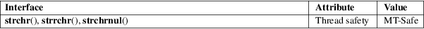

strchr, strrchr, strchrnul − locate character in string
Standard C library (libc, −lc)
#include <string.h>
char
*strchr(const char *s, int c);
char *strrchr(const char *s, int
c);
#define
_GNU_SOURCE /* See feature_test_macros(7) */
#include <string.h>
char *strchrnul(const char *s, int c);
The strchr() function returns a pointer to the first occurrence of the character c in the string s.
The strrchr() function returns a pointer to the last occurrence of the character c in the string s.
The strchrnul() function is like strchr() except that if c is not found in s, then it returns a pointer to the null byte at the end of s, rather than NULL.
Here "character" means "byte"; these functions do not work with wide or multibyte characters.
The strchr() and strrchr() functions return a pointer to the matched character or NULL if the character is not found. The terminating null byte is considered part of the string, so that if c is specified as '\0', these functions return a pointer to the terminator.
The strchrnul() function returns a pointer to the matched character, or a pointer to the null byte at the end of s (i.e., s+strlen(s)) if the character is not found.
For an explanation of the terms used in this section, see attributes(7).

strchr()
strrchr()
C11, POSIX.1-2008.
strchrnul()
GNU.
strchr()
strrchr()
POSIX.1-2001, C89, SVr4, 4.3BSD.
strchrnul()
glibc 2.1.1.
memchr(3), string(3), strlen(3), strpbrk(3), strsep(3), strspn(3), strstr(3), strtok(3), wcschr(3), wcsrchr(3)